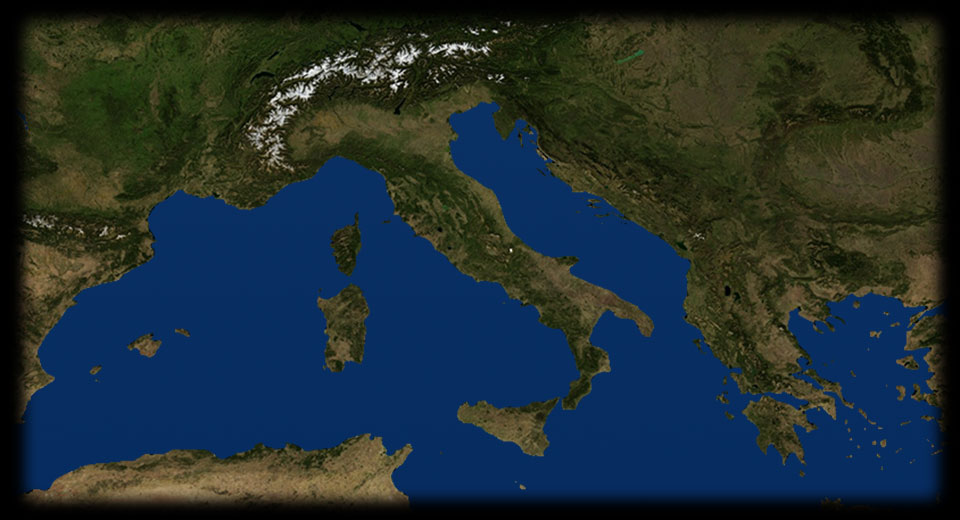
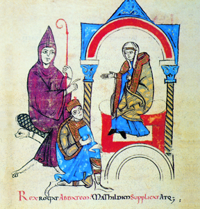

- 110 370
- 220 450
- 20 305
- 
CANOSSA
Nell’inverno del 1077 Enrico IV scende in Italia, a Canossa, per cercare un accordo con Gregorio VII, che lo fa attendere tre giorni, a piedi nudi, sulla neve, prima di riceverlo. L’imperatore - nell’immagine inginocchiato ai piedi di Matilde di Canossa - ottiene, grazie alla mediazione della contessa, il perdono di papa Gregorio VII, raffigurato a sinistra in questa miniatura italiana del secolo XII che illustra la Vita di Matilde. ROMA
1075: Gregorio VII promulga il Dictatus papae. Il documento conferisce al papa l’autorità di decidere su questioni di governo della chiesa, compresa la nomina dei vescovi. Gregorio afferma che i preti devono obbedienza solo al papa, e che solo al papa, e non agli imperatori, spetta l’investitura degli uomini di chiesa. Gregorio VII scomunica Enrico IV.WORMS
L’imperatore Enrico IV reagisce all’affronto di Gregorio VII, poiché i vescovi sono parte fondamentale del funzionamento dell’Impero a livello locale. Nel 1076 fa deporre Gregorio VII da un’assemblea di vescovi a lui fedeli. Nel 1122 il concordato di Worms, siglato da Enrico V e da Callisto II, sancisce la distinzione tra potere temporale e spirituale. L’investitura dei vescovi viene riservata al papa, mentre all’imperatore spetta il compito di concedere ai vescovi i poteri civili. Il concordato pone fine alla lotta per le investiture.